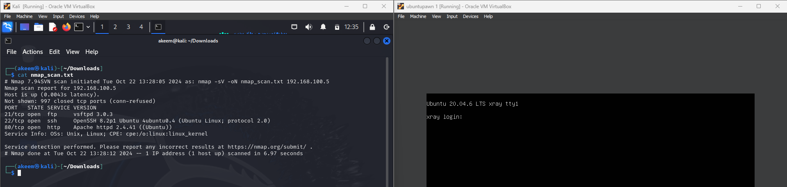

My Projects
Explore the projects I have worked on, showcasing my skills in cybersecurity, networking, and web development.
CTF Machines
Custom Vulnerable Machines
Designed and solved Capture The Flag (CTF) challenges, demonstrating skills in reverse engineering and penetration testing. This project helped improve my ability to identify vulnerabilities and exploit them in controlled environments, simulating real-world cyberattack scenarios.
Custom Vulnerable Machine
Completed a custom CTF machine designed with multiple layers of security to simulate real-world attack scenarios. This project involved advanced exploitation techniques such as privilege escalation and lateral movement, significantly enhancing my penetration testing expertise.
Web Development
Responsive Portfolio Website
This website, built as part of my web development project, showcases my skills and experience. It is a fully responsive portfolio website developed using HTML, CSS, and JavaScript. The site includes sections such as About, Projects, and Contact, designed with a clean and modern interface. The responsive design ensures that the website functions seamlessly across different devices and screen sizes, providing a great user experience on both mobile and desktop platforms.
Server and Tools
HTTP Proxy Server

Developed a custom HTTP proxy server to simulate vulnerable environments for cybersecurity training and penetration testing. The server allowed the testing of various attack vectors, providing insights into web application security issues and network-level vulnerabilities.
Autopsy Tool
The Autopsy tool is an open-source digital forensics platform used for analyzing disk images and recovering evidence. This project demonstrates my skills in conducting forensic investigations, extracting critical data, and compiling a report based on the findings. It helped me gain hands-on experience with file system analysis, keyword searches, and timeline creation for cybersecurity investigations.
FTK Imager


FTK Imager is a digital forensics tool used to preview and acquire forensic images of data. This project highlights my ability to work with forensic imaging and data preservation for analysis. I utilized FTK Imager to create forensic copies of storage devices and validate their integrity using hash values.
Security Simulations
DDoS Attack Simulation and Mitigation
This project involved simulating a Distributed Denial of Service (DDoS) attack on a web server to understand its impact on performance and availability. After successfully simulating the attack, I implemented and tested various mitigation techniques, including rate limiting, IP blacklisting, and setting up a WAF (Web Application Firewall) to defend against the attack. The process helped me understand both the offensive and defensive aspects of network security.
SIEM Monitoring and Threat Detection


Configured and implemented Security Information and Event Management (SIEM) systems simulating real-time threat monitoring, log aggregation, and incident detection. This project enhanced my ability to monitor network activities, identify potential security breaches, and respond effectively using automated alerts and analysis tools. Additionally, I am familiar with Endpoint Detection and Response (EDR), Threat Intelligence, and Log Management, which allowed me to enhance my threat detection and response capabilities.
Case Study
Cybersecurity Threat and Best Practices
This eBook outlines the investigation of cyber-crime and strategies for mitigating its effects in Jamaica. The case study explores real-world examples and discusses preventative measures and responses to cyber incidents, offering valuable insights into improving cybersecurity practices.